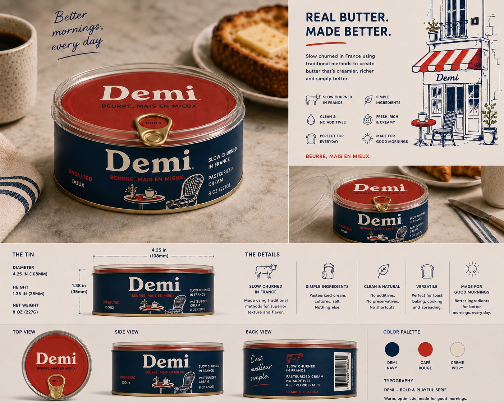
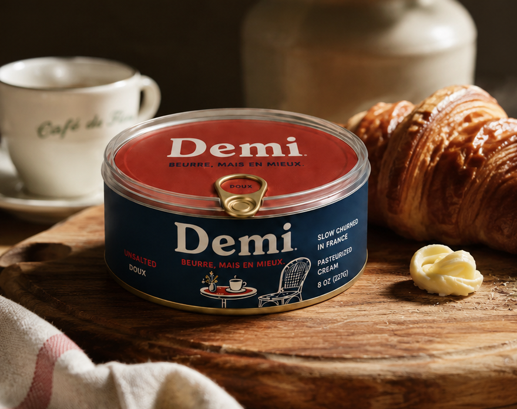

Bestseller
Demi Butter
Slow churned from pasteurized cream. Rich, creamy mouthfeel—perfect for baking, cooking, and spreading on everything.
Slow-churned butter from France. Simple ingredients, exceptional quality.
Shop Our Butter
Toast, baking, cooking, and spreading on everything you love
Traditional methods for superior texture and flavor
Pasteurized cream. Nothing else. No additives or preservatives
Responsibly produced with care for quality and sustainability
Three pantry staples. Done exceptionally well.

Slow churned from pasteurized cream. Rich, creamy mouthfeel—perfect for baking, cooking, and spreading on everything.
Delicate hand-harvested salt with subtle briny notes. A small touch that elevates any dish.
Clean, bright, and versatile. Emulsifies dressings, lifts sauces, and belongs in every kitchen.

The Demi tin is made to be seen. Navy, red, and gold—a design that nods to the French épicerie without winking at it.
"Simple ingredients done exceptionally well."
— The Demi philosophy
French food culture has always celebrated simple ingredients done exceptionally well. Demi brings that philosophy to everyday kitchens—not as a luxury brand, not as a heritage brand, but as something you reach for every morning without thinking twice.
No clichés, no theatrics. Just thoughtfully made staples that belong on your counter every day.
As Featured In